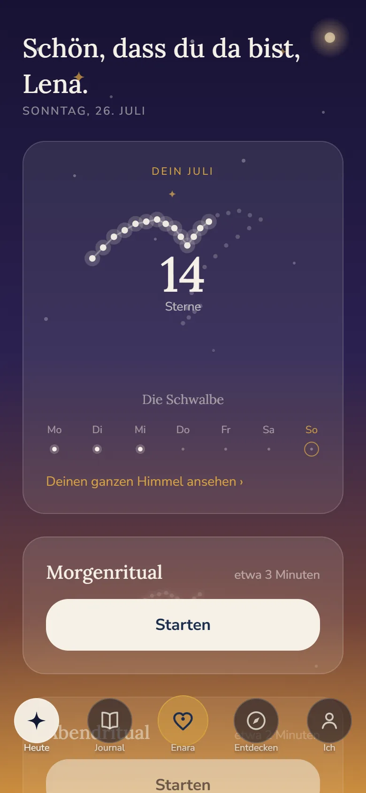
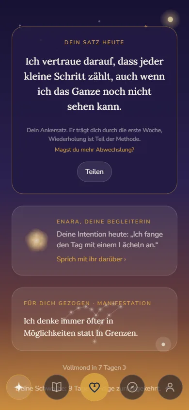
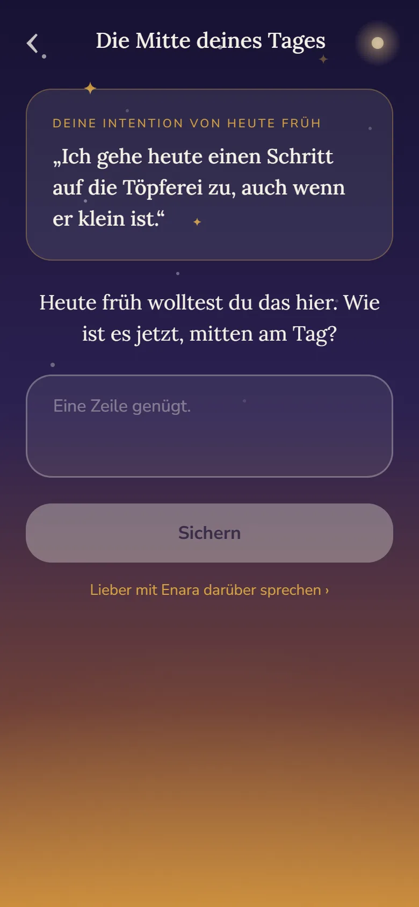
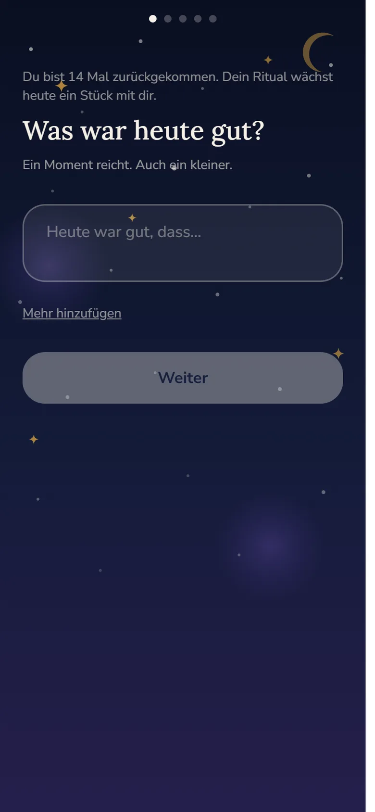
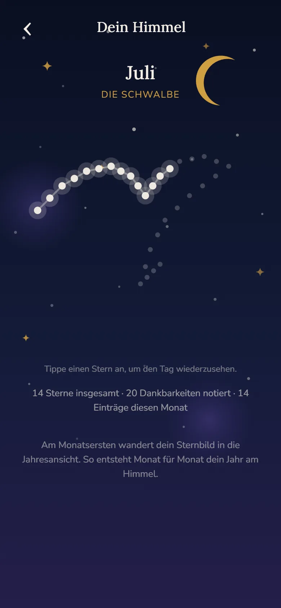
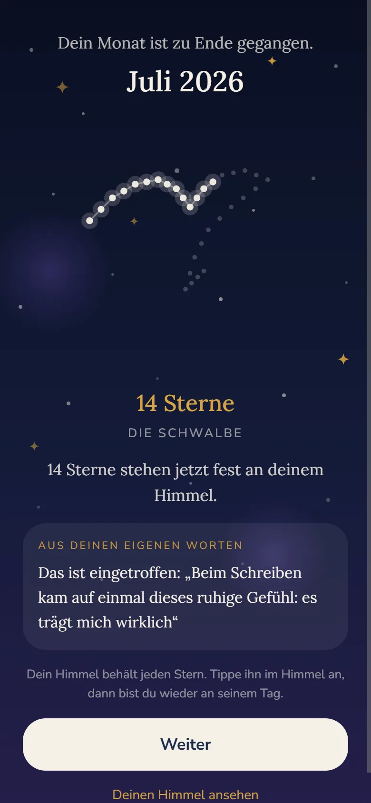
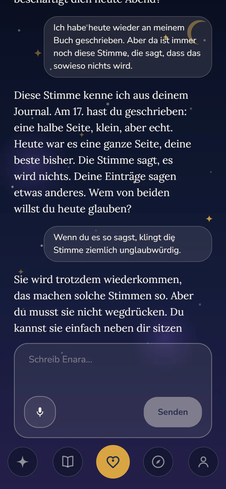
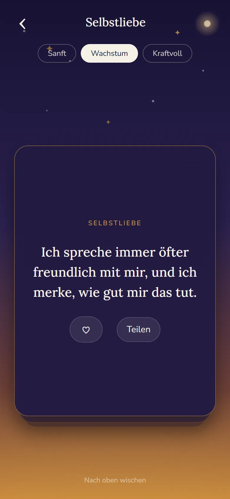
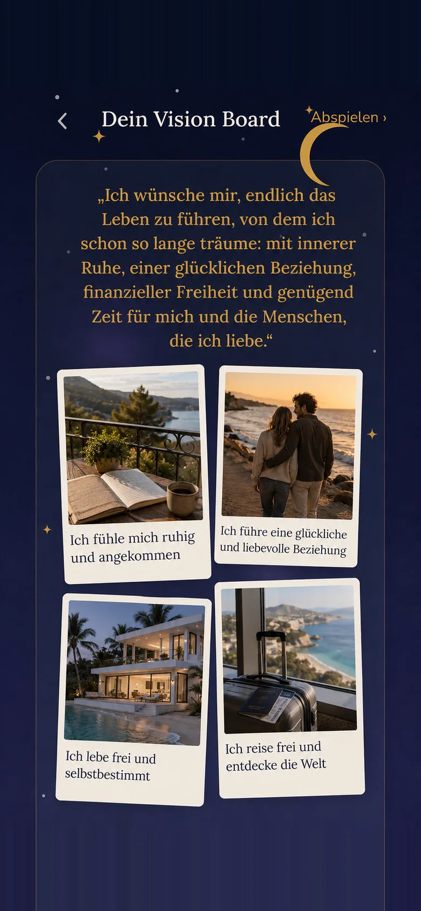

Dein Journal für Manifestation
Was du dir wünschst, bekommt hier einen Ort.
Ein Morgenritual, ein Abendritual und ein Journal, das dich kennt. Und weil du sehen sollst, was daraus wird, zeigt Enara dir zuerst dein Gewachsenes.
Für iPhone. Die Rituale und dein Journal bleiben dauerhaft kostenlos. Drei Tage lang ist auch Plus dabei, ohne Zahlungsdaten.

Privat und verschlüsselt, deine Worte gehören dir
Auf Deutsch gemacht, von Grund auf
Drei Gratistage, kein automatisches Abo
Ein Tag mit Enara
Ein ruhiger Anfang, ein sanfter Abschluss.
Enara ist kein Pflichtprogramm. Sie gibt deinem Tag zwei kleine Anker und sammelt, was dabei entsteht.

Morgens
Drei Minuten, die deinen Tag ausrichten.
Eine Intention, ein Moment Dankbarkeit und dein Satz für heute, gebaut aus deinen eigenen Worten statt aus einem Kalenderspruch.

Mittags
Eine Frage aus deinen eigenen Worten.
Mitten am Tag greift Enara auf, was du dir morgens vorgenommen hast, und fragt genau danach. Eine Zeile reicht. Wer mehr sagen will, spricht mit ihr darüber.

Abends
Der Abend prüft nicht, er schließt.
Was gut war, was du loslässt, wofür du dankbar bist. Dann ist der Tag geschlossen, und du kannst schlafen.
Drei Gratistage, ganz ohne Zahlungsdaten.
Dein Himmel
Jede Rückkehr setzt einen Stern.
Jeder Tag mit Eintrag wird ein Stern, ein Punkt für jeden Tag des Monats. Jeder Stern führt angetippt zurück zu seinem Tag. Nichts verfällt und nichts mahnt, dein Himmel wächst nur.

Das ist ein echter Juli. 14 Einträge, 14 Sterne, eine Schwalbe.

Am Monatsende kommt etwas zurück.
Zum Monatsende legt Enara ihn dir noch einmal hin: das fertige Sternbild, deine Zahl, und einen Satz, den du selbst geschrieben hast. Kein Pokal. Der Beweis, dass du da warst.
- Einmal im Monat, ungefragt und ohne Benachrichtigung
- Jederzeit wieder aufrufbar in deinem Himmel
- Auch drei Sterne sind drei Tage, an denen du da warst
Dein erster Stern entsteht heute Abend.
Funktionen
Alles, was dich täglich begleitet.

Enara kennt dein Journal und hört zu.Plus
Enara erinnert sich an das, was dir wichtig ist. Sie spiegelt deine Worte und stellt die eine Frage, die weiterführt. Im Bild antwortet sie auf einen echten Zweifel, mit einem Eintrag von vier Tagen davor.
- Gedächtnis aus deinem Journal, über Wochen und Monate
- Schreiben oder einfach reinsprechen, das Mikro hört zu
- Auf Wunsch ein Gruß am Morgen und am Abend
Enara ist eine künstliche Intelligenz, und sie sagt dir das ehrlich. Sie ersetzt keine Therapie, und in einer Krise nennt sie dir Menschen, die jetzt gut zuhören können.

720 Sätze, die sich nach dir richten.
Die Bibliothek trägt zwölf Lebensbereiche, von Selbstliebe bis Fülle. Jeder Satz gibt es in drei Stärken, damit er sich glaubwürdig anfühlt statt zu groß.
- Zwölf Kategorien, 720 kuratierte Sätze auf Deutsch
- Jeden Tag ein Satz, für dich gezogen

Das Leben, auf das du zugehst.
Dein Vision Board trägt deine eigenen Fotos, nicht fremde Bildwelten. Zu jedem Bild schreibst du einen Satz in der Gegenwart, und darüber steht dein Wunsch, so wie du ihn Enara erzählt hast.
- Deine Fotos, verschlüsselt in deinem Konto gesichert
- Abspielen: ein Bild nach dem anderen, in aller Ruhe
- Eingetroffen? Ein goldener Haken, und es bleibt als Beweis stehen
- Ohne Grenze mit Plus, sonst bis zu einer festen Zahl Bilder
Die Rituale, dein Journal und dein Himmel kosten nichts, dauerhaft.
Und noch mehr
Kleine Dinge, die den Unterschied machen.
Sätze weitergeben
Ein Satz, der dich trifft, wird mit einem Tippen zu einer Karte im Sternenhimmel, mit dem Satz darauf. Die schickst du einer Freundin, stellst sie in deine Story oder legst sie zu deinen Fotos.
SchreibvorlagenPlus
Wenn das leere Blatt zu leer ist: sieben Vorlagen, von „Die Bestellung ans Universum" bis „Brief an dein früheres Ich". Dazu zwei eigene fürs Mondritual.
MondritualePlus
An Neumond und Vollmond öffnet sich das Mondritual: du schreibst einen Brief an deinen nächsten Vollmond und öffnest ihn, wenn er voll ist.
Wochenfragen
Enara lernt dich langsam kennen: eine kleine Frage pro Woche, deine Antworten bleiben einsehbar und löschbar.
ImpulsePlus
Auf Wunsch meldet sich Enara mit einem kurzen Impuls, persönlich und leise statt laut und ständig.
Dein Sternbild
Aus dem, was du Enara über dich erzählt hast, entsteht ein Bild, ein Name und ein Weg, der zu dir passt. Ohne neue Fragen, ohne Test. Es verändert sich, wenn du dich veränderst.
Deine Tagesseite
Morgen und Abend landen auf einer Seite: Intention, Dankbarkeit, was gut war. Reinsprechen geht auch, Enara macht daraus einen klaren Eintrag. Nach zwei Wochen liest es sich wie ein Brief an dich selbst.
Dein Sternzeichen
Enara kennt dein Zeichen und spricht dich so an, als Ansprache und Stimmung, nicht als Prophezeiung.
Deine Favoriten
Sätze, die dich treffen, wandern in deine Sammlung und begegnen dir wieder, wenn sie passen.
Vertrauen
Deine Worte gehören dir.
Ein Journal lebt davon, dass du ehrlich sein kannst. Darum ist Vertrauen bei Enara keine Fußnote, sondern Teil des Produkts.
Lokal zuerst
Vieles bleibt auf deinem Gerät. Dein Konto sichert deine Einträge verschlüsselt, damit sie beim Gerätewechsel bei dir bleiben.
Keine Werbung, kein Tracking
Enara zeigt dir nichts an außer Enara. Keine Werbenetzwerke, keine Analyse zu Marketingzwecken.
KI nur mit deinem Ja
Kein Wort verlässt dein Gerät in Richtung einer KI, bevor du nicht ausdrücklich zugestimmt hast. Dein Ja kannst du jederzeit zurücknehmen.
Fair bleibt fair
Kein Wochenabo, keine versteckten Kosten. Was du geschrieben hast, bleibt deins, auch ohne Abo, immer.
Preise
Ehrlich und einfach.
Jedes neue Konto beginnt mit drei Gratistagen und vollem Zugang, ganz ohne Zahlungsdaten. Danach entscheidest du, ein Abo startet nie von allein.
Enara
Dein tägliches Ritual, dauerhaft frei.
0 € für immer
- Morgenritual und Abendritual
- Journal mit Kalender und Tagesseiten
- Dein Himmel mit allen Sternbildern
- Bibliothek zum Stöbern
Enara Plus
Mit Enara als Begleiterin an deiner Seite.
12,99 € im Monat
oder 59,99 € im Jahr
- Gespräche mit Enara, mit Gedächtnis aus deinem Journal
- Ihre Grüße am Morgen und am Abend, in eigenen Worten
- Ihre Impulse zwischendurch, aus dem, was ihr besprochen habt
- Reinsprechen mit Veredelung zum klaren Eintrag
- Mondritual und alle sieben Schreibvorlagen
- „Dein Wunsch": Enara baut dir Sätze aus deinen Worten
- Dein Vision Board ohne Grenze
Die Preise siehst du vor jedem Kauf im App Store. Ein Abo verlängert sich automatisch, bis du kündigst. Das geht jederzeit in deinen Store Einstellungen, und deine Einträge bleiben auch ohne Abo vollständig bei dir.
Du fängst in der kostenlosen Fassung an. Plus buchst du nur, wenn du willst.
Fragen
Kurz beantwortet.
Was kostet Enara?
Die Rituale, das Journal und dein Himmel sind dauerhaft kostenlos. Enara Plus kostet 12,99 € im Monat oder 59,99 € im Jahr, das sind 5 € im Monat. Dazu gehören die Gespräche mit Enara samt Gedächtnis, ihre Grüße und Impulse, das Reinsprechen mit Veredelung, das Mondritual, alle sieben Schreibvorlagen, deine eigenen Wunschsätze und das Vision Board ohne Grenze. Jedes neue Konto beginnt mit drei Gratistagen und vollem Zugang, ohne Zahlungsdaten.
Startet nach den Gratistagen automatisch ein Abo?
Nein, nie. Nach den drei Tagen wechselt Enara von allein in die kostenlose Version. Ein Abo gibt es nur, wenn du es selbst im App Store abschließt.
Was passiert mit meinen Einträgen?
Deine Einträge liegen auf deinem Gerät und werden verschlüsselt in Europa gesichert, damit sie beim Gerätewechsel bei dir bleiben. Enara zeigt keine Werbung und verkauft keine Daten. Details stehen in der Datenschutzerklärung.
Liest eine KI mein Journal einfach mit?
Nein. Sie sieht nur, was du ihr selbst gibst, und erst nachdem du zugestimmt hast. Nimmst du dein Ja zurück, bleibt Enara als Journal vollständig nutzbar.
Ersetzt Enara eine Therapie?
Nein. Enara ist ein Werkzeug für Selbstreflexion und Wohlbefinden, keine medizinische oder therapeutische Leistung. In einer Krise nennt dir Enara Anlaufstellen mit echten Menschen, die jetzt gut zuhören können.
Gibt es Enara auch für Android?
Enara ist zuerst auf dem iPhone erschienen. Die Android Fassung läuft im geschlossenen Test und kommt in den nächsten Wochen. Schreib uns an support@getenara.app, dann sagen wir dir Bescheid.
Enara heißt Schwalbe.
Sie kommt wieder, jedes Jahr, ohne dass jemand sie ruft. Enara ist im App Store, für iPhone. Fragen beantworten wir gern unter support@getenara.app
Enara gratis laden